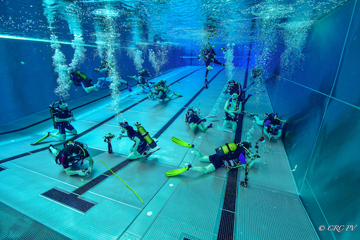
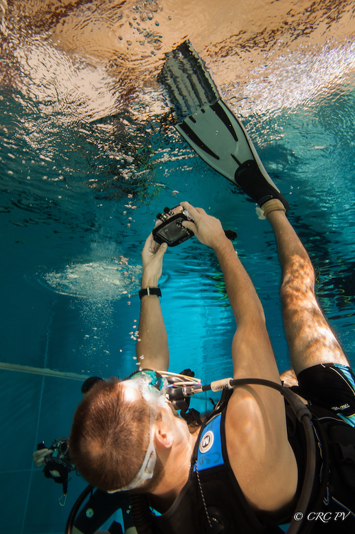

La commission régionale centre photo et vidéo
La CRC PV est une commission culturelle et sportive du comité Centre de la Fédération Française et d‘ études Sous Marine (FFESSM).


Une équipe de passionnés
Depuis 20 ans, nous faisons découvrir et formons à la photo et vidéo subaquatique les plongeurs de la région Centre et d’ailleurs.
Vous souhaitez faire de la photo ou vidéo sous marine ? Nous vous guiderons dans la découverte de cette activité passionante.
Vous pratiquez déjà la photo ou la vidéo subaquatique? Venez partager votre expérience avec nous !